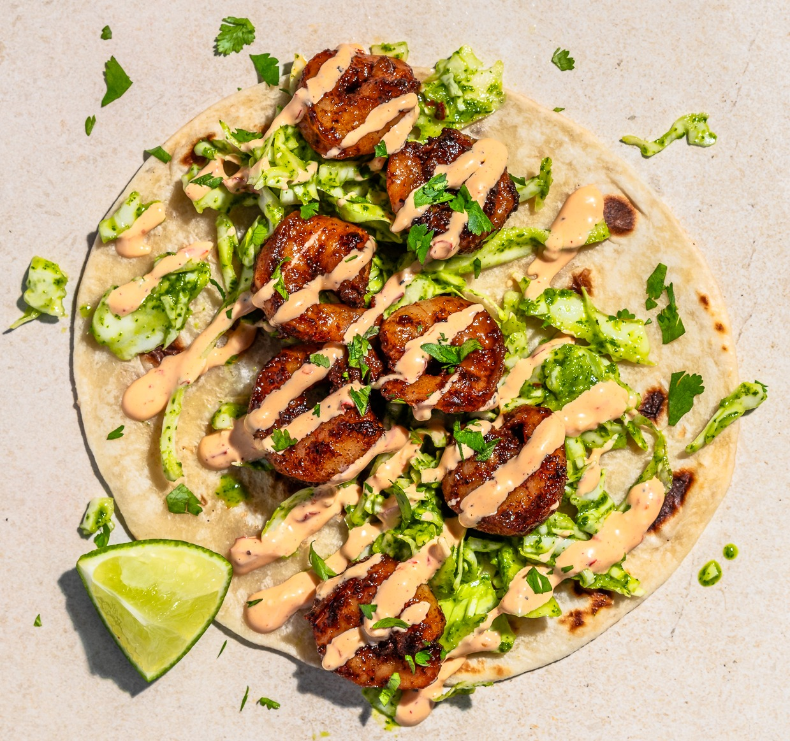

Home
Shrimp Tacos

Description
Jalapeño shrimp tacos are a bold and flavorful dish made with tender shrimp seasoned and cooked with fresh
jalapeños, garlic, and spices. The spicy shrimp are served in warm tortillas and often topped with crisp
cabbage, fresh cilantro, and a creamy sauce that balances the heat. These tacos are light, zesty, and packed
with flavor, making them a perfect quick meal with a little kick.
Ingredients
- 1 lb shrimp (peeled and deveined)
- 2 jalapeños, sliced
- 1 tablespoon olive oil
- Salt and pepper
- 6 small tortillas
- 1 cup shredded cabbage (optional)
- 1 bottle lime cilantro sauce
- Fresh lime wedges
Steps
- Heat olive oil in a pan over medium heat and cook the shrimp and sliced jalapeños until the shrimp turn pink. Season with salt and pepper.
- Warm the tortillas in a pan or microwave.
- Fill each tortilla with shrimp, jalapeños, and shredded cabbage.
- Drizzle lime cilantro sauce on top and serve with lime wedges.